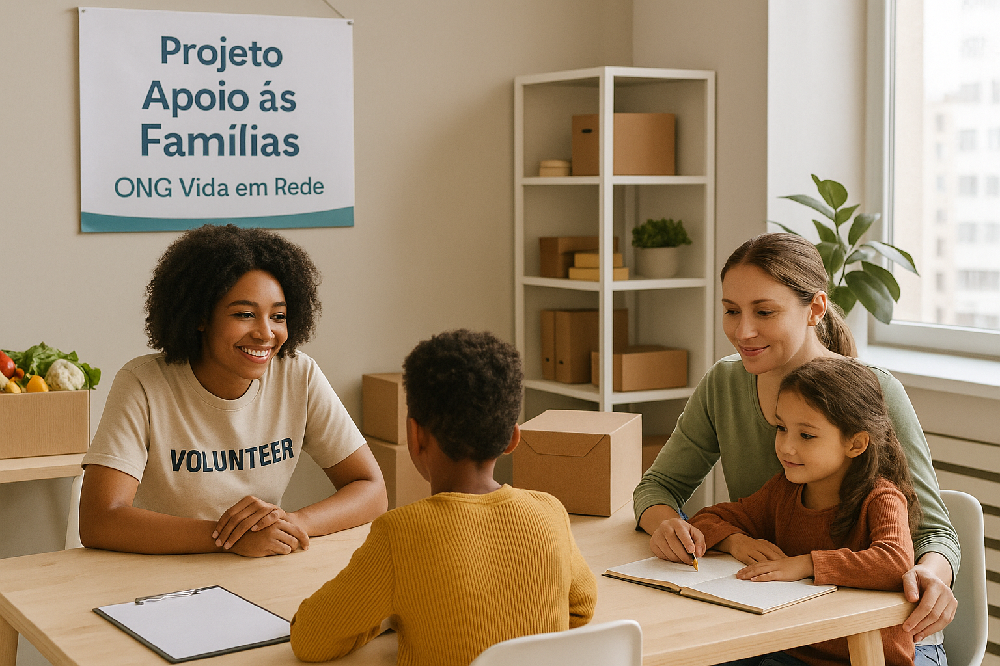

A ONG Vida em Rede desenvolve projetos contínuos em educação, inclusão digital e apoio
às famílias. Cada projeto é construído em parceria com a comunidade.
Nossos principais projetos
Atividades do projeto de reforço escolar.
Reforço Escolar Comunidade Ativa
Público-alvo: Crianças de 7 a 14 anos.
Aulas de reforço em português e matemática, oficinas de leitura e acompanhamento
pedagógico individualizado para estudantes em defasagem escolar.
Local: Centro Comunitário Vida em Rede - Zona Leste de São Paulo.
Turma do curso de inclusão digital.
Inclusão Digital para o Futuro
Público-alvo: Jovens de 15 a 24 anos.
Curso de informática básica e intermediária, com foco em ferramentas digitais,
cidadania na internet e preparação para o mercado de trabalho.
Local: Laboratório de Informática - Sede da ONG Vida em Rede.

Encontro de famílias em ação social da ONG.
Apoio às Famílias em Rede
Público-alvo: Famílias em situação de vulnerabilidade social.
Atendimento psicossocial, encaminhamento para serviços públicos, oficinas de
geração de renda e rodas de conversa sobre direitos e cidadania.
Local: Diversos territórios atendidos pela rede de parceiros.
Voluntariado
Como ser voluntário
Você pode atuar em diversas frentes: reforço escolar, apoio em eventos, comunicação,
captação de recursos, tecnologia, entre outras áreas.
O primeiro passo é realizar seu cadastro em nossa plataforma. Após a análise do
perfil, entraremos em contato para sugerir oportunidades alinhadas às suas habilidades
e disponibilidade.